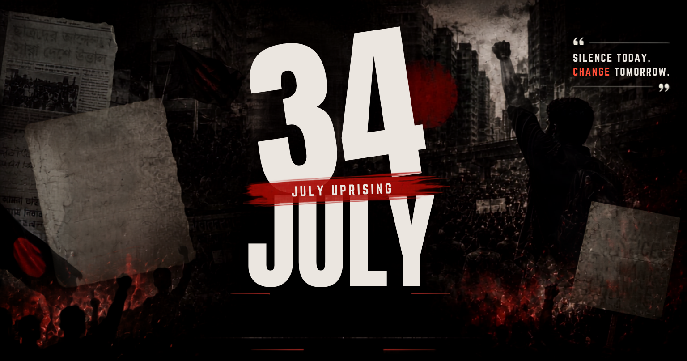

```html
<!DOCTYPE html>
<html lang="en">
<head>
    <meta charset="UTF-8">
    <meta name="viewport" content="width=device-width, initial-scale=1.0, maximum-scale=5.0">
    <meta http-equiv="X-UA-Compatible" content="ie=edge">
    
    <!-- SEO and Open Graph Meta Tags -->
    <title>ISTIACK'S JULY CORNER - July 34, 2024</title>
    <meta name="description" content="The definitive historical account of July 34 (August 3, 2024), the single most critical turning point of the Bangladesh mass uprising.">
    <meta property="og:title" content="ISTIACK'S JULY CORNER - July 34: The Turning Point">
    <meta property="og:description" content="The term “July 34, 2024” was the metaphorical calendar extension used by online activists and citizens to refer to August 3, 2024. Read the full historical account.">
    <meta property="og:type" content="article">
    <meta property="og:image" content="./t.png">
    <meta property="og:url" content="https://istiack.ami.bd/july-corner/34-july/">
    <meta name="twitter:card" content="summary_large_image">

    <!-- 
      ======================================================================
      CSS ARCHITECTURE & STYLING
      ======================================================================
      - Mobile-First Philosophy
      - Strict Font Declarations
      - Advanced Print Media Queries
      - Minimalist "Pure Article" UI
    -->
    <style>
        /* ==========================================================================
           1. CSS VARIABLES & THEME TOKENS
           ========================================================================== */
        :root {
            /* Colors - Pure Article Aesthetic (High Contrast, Clean) */
            --bg-color: #ffffff;
            --text-main: #111111;
            --text-muted: #555555;
            --text-light: #888888;
            --border-color: #e5e5e5;
            --accent-color: #000000;
            --bg-muted: #f9f9f9;
            --overlay-bg: rgba(0, 0, 0, 0.7);
            
            /* Typography Fallbacks (Overridden by specific lang classes) */
            --font-fallback: sans-serif;
            
            /* Spacing Scale (Mobile First) */
            --space-1: 0.25rem;
            --space-2: 0.5rem;
            --space-3: 1rem;
            --space-4: 1.5rem;
            --space-5: 2rem;
            --space-6: 3rem;
            --space-8: 4rem;
            --space-12: 6rem;
            
            /* Layout & Z-Index */
            --max-width: 800px;
            --header-height: 70px;
            --z-header: 100;
            --z-modal: 1000;
            --z-toast: 2000;
            
            /* Transitions */
            --trans-fast: 150ms ease-in-out;
            --trans-normal: 300ms ease-in-out;
        }

        /* ==========================================================================
           2. STRICT FONT DECLARATIONS (@font-face)
           ========================================================================== 
           As per requirements, these fonts are pulled directly from the root directory.
        */
        @font-face {
            font-family: 'EnglishMain';
            src: url('/E1.ttf') format('truetype');
            font-weight: normal;
            font-style: normal;
            font-display: swap;
        }
        
        @font-face {
            font-family: 'EnglishHeader';
            src: url('/E2.ttf') format('truetype');
            font-weight: bold;
            font-style: normal;
            font-display: swap;
        }

        @font-face {
            font-family: 'BanglaHeader';
            src: url('/B1.ttf') format('truetype');
            font-weight: bold;
            font-style: normal;
            font-display: swap;
        }

        @font-face {
            font-family: 'BanglaMain';
            src: url('/B2.ttf') format('truetype');
            font-weight: normal;
            font-style: normal;
            font-display: swap;
        }

        /* ==========================================================================
           3. RESET & BASE STYLES
           ========================================================================== */
        *, *::before, *::after {
            box-sizing: border-box;
            margin: 0;
            padding: 0;
        }

        html {
            font-size: 16px; /* Base 16px */
            scroll-behavior: smooth;
            -webkit-text-size-adjust: 100%;
        }

        body {
            background-color: var(--bg-color);
            color: var(--text-main);
            line-height: 1.7;
            overflow-x: hidden;
            -webkit-font-smoothing: antialiased;
            -moz-osx-font-smoothing: grayscale;
        }

        /* STRICT FONT CONTROLS 
           Every letter must be under the control of these fonts based on state.
        */
        
        /* English State */
        body.lang-en {
            font-family: 'EnglishMain', var(--font-fallback);
        }
        body.lang-en h1, 
        body.lang-en h2, 
        body.lang-en h3, 
        body.lang-en h4, 
        body.lang-en h5, 
        body.lang-en h6,
        body.lang-en .header-title {
            font-family: 'EnglishHeader', var(--font-fallback);
        }
        body.lang-en button, 
        body.lang-en input, 
        body.lang-en .ui-text {
            font-family: 'EnglishMain', var(--font-fallback);
        }

        /* Bangla State */
        body.lang-bn {
            font-family: 'BanglaMain', var(--font-fallback);
        }
        body.lang-bn h1, 
        body.lang-bn h2, 
        body.lang-bn h3, 
        body.lang-bn h4, 
        body.lang-bn h5, 
        body.lang-bn h6,
        body.lang-bn .header-title {
            font-family: 'BanglaHeader', var(--font-fallback);
        }
        body.lang-bn button, 
        body.lang-bn input, 
        body.lang-bn .ui-text {
            font-family: 'BanglaMain', var(--font-fallback);
        }

        /* Base Typography Metrics */
        h1, h2, h3 {
            line-height: 1.2;
            margin-bottom: var(--space-4);
            color: var(--text-main);
        }

        h1 { font-size: 2.25rem; }
        h2 { font-size: 1.75rem; margin-top: var(--space-8); border-bottom: 1px solid var(--border-color); padding-bottom: var(--space-2); }
        h3 { font-size: 1.35rem; margin-top: var(--space-6); }
        
        p {
            margin-bottom: var(--space-4);
            font-size: 1.125rem;
        }

        ul, ol {
            margin-bottom: var(--space-4);
            padding-left: var(--space-5);
        }

        li {
            margin-bottom: var(--space-2);
            font-size: 1.125rem;
        }

        img {
            max-width: 100%;
            height: auto;
            display: block;
        }

        button {
            cursor: pointer;
            border: none;
            background: none;
            color: inherit;
        }

        /* Text Links styling without actual hyperlink functionality */
        .raw-link {
            word-break: break-all;
            color: var(--text-muted);
            font-style: italic;
            font-size: 0.95em;
        }

        /* ==========================================================================
           4. LAYOUT & COMPONENTS
           ========================================================================== */
        
        /* Fixed Header */
        .site-header {
            position: fixed;
            top: 0;
            left: 0;
            width: 100%;
            height: var(--header-height);
            background-color: var(--bg-color);
            border-bottom: 1px solid var(--border-color);
            z-index: var(--z-header);
            display: flex;
            align-items: center;
            justify-content: space-between;
            padding: 0 var(--space-4);
        }

        .header-left {
            display: flex;
            align-items: center;
            gap: var(--space-3);
        }

        /* Logo styling: Black and white first */
        .site-logo {
            height: 40px;
            width: 40px;
            object-fit: contain;
            filter: grayscale(100%); /* Strict grayscale requirement */
        }

        .header-title {
            font-size: 1.25rem;
            letter-spacing: 0.05em;
            text-transform: uppercase;
            margin: 0;
            display: none; /* Hidden on very small screens, shown on > 480px */
        }

        .header-right {
            display: flex;
            align-items: center;
            gap: var(--space-3);
        }

        /* Buttons */
        .btn-outline {
            display: inline-flex;
            align-items: center;
            gap: var(--space-2);
            padding: var(--space-2) var(--space-4);
            border: 1px solid var(--text-main);
            border-radius: 4px;
            font-size: 0.9rem;
            font-weight: bold;
            transition: all var(--trans-fast);
        }

        .btn-outline:hover, .btn-outline:focus-visible {
            background-color: var(--text-main);
            color: var(--bg-color);
        }

        .btn-outline svg {
            width: 16px;
            height: 16px;
            fill: currentColor;
        }

        .btn-icon {
            display: flex;
            align-items: center;
            justify-content: center;
            width: 40px;
            height: 40px;
            border-radius: 50%;
            transition: background-color var(--trans-fast);
        }

        .btn-icon:hover {
            background-color: var(--bg-muted);
        }

        .btn-icon svg {
            width: 24px;
            height: 24px;
            fill: var(--text-main);
        }

        /* Main Container */
        .main-content {
            margin-top: var(--header-height);
            min-height: calc(100vh - var(--header-height));
            padding-bottom: var(--space-12);
        }

        /* Hero Section */
        .hero-section {
            width: 100%;
            background-color: var(--bg-muted);
        }

        .hero-image {
            width: 100%;
            max-height: 60vh;
            object-fit: cover;
            /* No caption as per requirements */
        }

        /* Action Bar (Share/Download) */
        .action-bar {
            max-width: var(--max-width);
            margin: 0 auto;
            padding: var(--space-4);
            display: flex;
            justify-content: flex-end;
            gap: var(--space-3);
            border-bottom: 1px solid var(--border-color);
        }

        /* Article Body */
        .article-container {
            max-width: var(--max-width);
            margin: 0 auto;
            padding: var(--space-6) var(--space-4);
        }

        .article-meta {
            margin-bottom: var(--space-6);
            color: var(--text-muted);
            font-size: 0.9rem;
            text-transform: uppercase;
            letter-spacing: 0.05em;
        }

        /* Video Container */
        .video-container {
            position: relative;
            padding-bottom: 56.25%; /* 16:9 Aspect Ratio */
            height: 0;
            overflow: hidden;
            margin: var(--space-6) 0;
            background: var(--bg-muted);
            border-radius: 8px;
        }

        .video-container iframe {
            position: absolute;
            top: 0;
            left: 0;
            width: 100%;
            height: 100%;
            border: 0;
        }

        /* Footer */
        .site-footer {
            border-top: 1px solid var(--border-color);
            padding: var(--space-6) var(--space-4);
            text-align: center;
            color: var(--text-muted);
            font-size: 0.9rem;
        }

        /* ==========================================================================
           5. MODALS & TOASTS (UI Overlays)
           ========================================================================== */
        
        /* Modal Backdrop */
        .modal-overlay {
            position: fixed;
            top: 0;
            left: 0;
            width: 100%;
            height: 100%;
            background-color: var(--overlay-bg);
            z-index: var(--z-modal);
            display: flex;
            align-items: center;
            justify-content: center;
            opacity: 0;
            visibility: hidden;
            transition: opacity var(--trans-normal), visibility var(--trans-normal);
            padding: var(--space-4);
        }

        .modal-overlay.active {
            opacity: 1;
            visibility: visible;
        }

        /* Modal Content */
        .modal-content {
            background-color: var(--bg-color);
            width: 100%;
            max-width: 450px;
            border-radius: 8px;
            padding: var(--space-6);
            box-shadow: 0 10px 25px rgba(0,0,0,0.1);
            position: relative;
            transform: translateY(20px);
            transition: transform var(--trans-normal);
        }

        .modal-overlay.active .modal-content {
            transform: translateY(0);
        }

        .modal-header {
            display: flex;
            justify-content: space-between;
            align-items: center;
            margin-bottom: var(--space-4);
        }

        .modal-title {
            font-size: 1.25rem;
            margin: 0;
        }

        .modal-close {
            background: none;
            border: none;
            cursor: pointer;
            padding: var(--space-1);
        }

        .modal-close svg {
            width: 24px;
            height: 24px;
            fill: var(--text-muted);
        }

        .modal-body {
            display: flex;
            flex-direction: column;
            gap: var(--space-3);
        }

        /* Modal Radio Buttons Custom UI */
        .print-option-label {
            display: flex;
            align-items: center;
            padding: var(--space-3);
            border: 2px solid var(--border-color);
            border-radius: 6px;
            cursor: pointer;
            transition: border-color var(--trans-fast);
        }

        .print-option-label:hover {
            border-color: var(--text-light);
        }

        .print-option-label input[type="radio"] {
            margin-right: var(--space-3);
            width: 18px;
            height: 18px;
            accent-color: var(--accent-color);
        }

        .print-option-label.selected {
            border-color: var(--accent-color);
            background-color: var(--bg-muted);
        }

        .modal-footer {
            margin-top: var(--space-5);
            display: flex;
            justify-content: flex-end;
            gap: var(--space-3);
        }

        .btn-primary {
            background-color: var(--accent-color);
            color: var(--bg-color);
            padding: var(--space-2) var(--space-5);
            border-radius: 4px;
            font-weight: bold;
            border: 2px solid var(--accent-color);
        }

        .btn-primary:hover {
            background-color: transparent;
            color: var(--accent-color);
        }

        .btn-text {
            padding: var(--space-2) var(--space-4);
            color: var(--text-muted);
            font-weight: bold;
        }

        .btn-text:hover {
            color: var(--text-main);
        }

        /* Toast Notification */
        .toast-container {
            position: fixed;
            bottom: var(--space-6);
            left: 50%;
            transform: translateX(-50%) translateY(100px);
            background-color: var(--text-main);
            color: var(--bg-color);
            padding: var(--space-3) var(--space-6);
            border-radius: 30px;
            display: flex;
            align-items: center;
            gap: var(--space-2);
            z-index: var(--z-toast);
            opacity: 0;
            transition: transform 0.4s cubic-bezier(0.175, 0.885, 0.32, 1.275), opacity 0.4s;
            box-shadow: 0 5px 15px rgba(0,0,0,0.2);
        }

        .toast-container.show {
            transform: translateX(-50%) translateY(0);
            opacity: 1;
        }

        .toast-container svg {
            width: 20px;
            height: 20px;
            fill: #4caf50;
        }

        /* ==========================================================================
           6. RESPONSIVE DESIGN (Media Queries)
           ========================================================================== */
        
        @media (min-width: 480px) {
            .header-title {
                display: block; /* Show newspaper name on larger mobile/desktop */
            }
        }

        @media (min-width: 768px) {
            h1 { font-size: 2.75rem; }
            h2 { font-size: 2rem; }
            p { font-size: 1.25rem; }
            li { font-size: 1.25rem; }
            
            .article-container {
                padding: var(--space-8) var(--space-4);
            }
        }

        /* ==========================================================================
           7. ADVANCED PRINT STYLES (@media print)
           ========================================================================== 
           Ensures accurate representation on paper. Videos removed, colors mapped to B&W.
        */
        @media print {
            /* Reset Backgrounds & Colors for pure B&W printing */
            body, .main-content, .article-container {
                background-color: transparent !important;
                color: #000 !important;
            }

            /* Hide interactive UI elements */
            .site-header, 
            .action-bar, 
            .site-footer, 
            .modal-overlay, 
            .toast-container,
            button {
                display: none !important;
            }

            /* Video Removal Constraint */
            .video-container, 
            iframe {
                display: none !important;
            }

            /* Ensure Images are printed (t.png specifically) */
            img {
                display: block !important;
                max-width: 100% !important;
                page-break-inside: avoid;
            }
            
            /* Remove grayscale filter from logo if printing, or keep it depending on preference. 
               We will keep it grayscale for B&W fidelity. */
            .bw-logo {
                filter: grayscale(100%) !important;
            }

            /* Typography Adjustments for Print */
            h1, h2, h3, p, li {
                color: #000 !important;
                page-break-inside: avoid;
            }

            h2 {
                border-bottom-color: #000 !important;
            }

            p, li {
                font-size: 12pt !important;
                line-height: 1.5 !important;
            }

            /* Page Breaks */
            h2, h3 {
                page-break-after: avoid;
            }

            /* Margins */
            @page {
                margin: 2cm;
                size: auto;
            }

            .main-content {
                margin-top: 0 !important;
                padding-bottom: 0 !important;
            }
            
            .article-container {
                padding: 0 !important;
                max-width: 100% !important;
            }

            /* Links formatting for print */
            .raw-link {
                color: #333 !important;
            }
            
            /* Special Print Container (Used for "Print Both" feature) */
            #special-print-container {
                display: block !important;
            }
            
            .print-page-break {
                page-break-before: always;
                margin-top: 2cm;
                padding-top: 2cm;
                border-top: 2px dashed #000;
            }
            
            /* Hide the normal flow if we are using the special print container */
            body.is-printing-special .normal-flow {
                display: none !important;
            }
        }
        
        /* Hidden Special Print Container - Only visible during print execution if needed */
        #special-print-container {
            display: none;
        }

    </style>
</head>

<!-- Body dynamically receives lang-en or lang-bn class via JS -->
<body class="lang-en normal-flow">

    <!-- ==========================================
         HEADER (Fixed Navigation)
         ========================================== -->
    <header class="site-header">
        <div class="header-left">
            <!-- Logo (Black and White) -->
            <path d=\'M3 9l9-7 9 7v11a2 2 0 0 1-2 2H5a2 2 0 0 1-2-2z\'></path><polyline points=\'9 22 9 12 15 12 15 22\'></polyline></svg>'">
            <!-- Newspaper Name -->
            <h1 class="header-title ui-text" id="ui-newspaper-name">ISTIACK'S JULY CORNER</h1>
        </div>
        
        <div class="header-right">
            <!-- Bilingual Switcher (Language Toggle) -->
            <button id="lang-toggle-btn" class="btn-outline ui-text" aria-label="Toggle Language">
                <svg xmlns="http://www.w3.org/2000/svg" viewBox="0 0 24 24">
                    <path d="M12.87 15.07l-2.54-2.51.03-.03A17.52 17.52 0 0 0 14.07 6H17V4h-7V2H8v2H1v2h11.17C11.5 7.92 10.44 9.75 9 11.35 8.07 10.32 7.3 9.19 6.69 8h-2c.73 1.63 1.73 3.17 2.98 4.56l-5.09 5.02L4 19l5-5 3.11 3.11.76-2.04M18.5 10h-2L12 22h2l1.12-3h4.75L21 22h2l-4.5-12m-2.62 7l1.62-4.33L19.12 17h-3.24z"/>
                </svg>
                <span id="ui-lang-btn-text">বাংলায় পড়ুন</span>
            </button>
        </div>
    </header>

    <!-- ==========================================
         MAIN CONTENT AREA
         ========================================== -->
    <main class="main-content" role="main">
        
        <!-- Hero Section (Strict: Image ./t.png, no caption) -->
        <section class="hero-section">
            <rect width=\'800\' height=\'400\' fill=\'%23e5e5e5\'/><text x=\'50%\' y=\'50%\' font-family=\'sans-serif\' font-size=\'24\' fill=\'%23888\' text-anchor=\'middle\'>Hero Image (./t.png)</text></svg>'">
        </section>

        <!-- Action Bar: Share & Print -->
        <div class="action-bar">
            <button id="share-btn" class="btn-icon" aria-label="Share Article" title="Share">
                <!-- Share SVG -->
                <svg xmlns="http://www.w3.org/2000/svg" viewBox="0 0 24 24">
                    <path d="M18 16.08c-.76 0-1.44.3-1.96.77L8.91 12.7c.05-.23.09-.46.09-.7s-.04-.47-.09-.7l7.05-4.11c.54.5 1.25.81 2.04.81 1.66 0 3-1.34 3-3s-1.34-3-3-3-3 1.34-3 3c0 .24.04.47.09.7L8.04 9.81C7.5 9.31 6.79 9 6 9c-1.66 0-3 1.34-3 3s1.34 3 3 3c.79 0 1.5-.31 2.04-.81l7.12 4.16c-.05.21-.08.43-.08.65 0 1.61 1.31 2.92 2.92 2.92 1.61 0 2.92-1.31 2.92-2.92s-1.31-2.92-2.92-2.92z"/>
                </svg>
            </button>
            <button id="print-trigger-btn" class="btn-icon" aria-label="Print Article" title="Print">
                <!-- Print SVG -->
                <svg xmlns="http://www.w3.org/2000/svg" viewBox="0 0 24 24">
                    <path d="M19 8H5c-1.66 0-3 1.34-3 3v6h4v4h12v-4h4v-6c0-1.66-1.34-3-3-3zm-3 11H8v-5h8v5zm3-7c-.55 0-1-.45-1-1s.45-1 1-1 1 .45 1 1-.45 1-1 1zm-1-9H6v4h12V3z"/>
                </svg>
            </button>
        </div>

        <!-- Article Container (Content injected here via JS) -->
        <article class="article-container" id="article-content">
            <!-- Dynamic Content Renders Here -->
        </article>

    </main>

    <!-- ==========================================
         FOOTER
         ========================================== -->
    <footer class="site-footer">
        <p class="ui-text" id="ui-footer-text">© 2024 ISTIACK'S JULY CORNER. Documenting History.</p>
    </footer>

    <!-- ==========================================
         PRINT SELECTION MODAL
         ========================================== -->
    <div class="modal-overlay" id="print-modal" role="dialog" aria-modal="true" aria-labelledby="modal-title">
        <div class="modal-content">
            <div class="modal-header">
                <h3 class="modal-title ui-text" id="modal-title">Select Print Language</h3>
                <button class="modal-close" id="modal-close-btn" aria-label="Close Modal">
                    <svg xmlns="http://www.w3.org/2000/svg" viewBox="0 0 24 24">
                        <path d="M19 6.41L17.59 5 12 10.59 6.41 5 5 6.41 10.59 12 5 17.59 6.41 19 12 13.41 17.59 19 19 17.59 13.41 12z"/>
                    </svg>
                </button>
            </div>
            <div class="modal-body">
                <!-- Print Option: English -->
                <label class="print-option-label ui-text" id="label-print-en">
                    <input type="radio" name="print-lang" value="en">
                    <span id="ui-print-en">English Only</span>
                </label>
                <!-- Print Option: Bangla -->
                <label class="print-option-label ui-text" id="label-print-bn">
                    <input type="radio" name="print-lang" value="bn">
                    <span id="ui-print-bn">Bangla Only</span>
                </label>
                <!-- Print Option: Both -->
                <label class="print-option-label ui-text selected" id="label-print-both">
                    <input type="radio" name="print-lang" value="both" checked>
                    <span id="ui-print-both">Both (English & Bangla)</span>
                </label>
            </div>
            <div class="modal-footer">
                <button class="btn-text ui-text" id="print-cancel-btn">Cancel</button>
                <button class="btn-primary ui-text" id="print-confirm-btn">Print Now</button>
            </div>
        </div>
    </div>

    <!-- ==========================================
         TOAST NOTIFICATION (For Share Link)
         ========================================== -->
    <div class="toast-container" id="share-toast" role="alert">
        <svg xmlns="http://www.w3.org/2000/svg" viewBox="0 0 24 24">
            <path d="M12 2C6.48 2 2 6.48 2 12s4.48 10 10 10 10-4.48 10-10S17.52 2 12 2zm-2 15l-5-5 1.41-1.41L10 14.17l7.59-7.59L19 8l-9 9z"/>
        </svg>
        <span class="ui-text" id="ui-toast-text">Link copied to clipboard!</span>
    </div>

    <!-- ==========================================
         SPECIAL HIDDEN CONTAINER FOR PRINTING BOTH
         ========================================== -->
    <div id="special-print-container"></div>


    <!-- 
      ======================================================================
      VANILLA JAVASCRIPT & CONTENT DATA
      ======================================================================
      - JSON Content Object (English & Translated Bangla)
      - State Management (Language Switcher)
      - DOM Manipulation Engine
      - Print & Share Logic
    -->
    <script>
        /**
         * ====================================================================
         * 1. CONTENT DATABASE (JSON-like Object)
         * ====================================================================
         * This structure holds all textual data for both English and Bangla.
         * The UI text (headers, buttons) and Article text are meticulously separated.
         */
        const appData = {
            // Configuration & Metadata
            config: {
                newspaperName: "ISTIACK'S JULY CORNER",
                shareUrlPath: "34-july/", // Appended to base domain
                baseDomain: "https://istiack.ami.bd/july-corner/"
            },
            
            // UI Strings for application chrome (header, buttons, modals)
            ui: {
                en: {
                    langBtn: "বাংলায় পড়ুন", // The prompt requests to show "Read in Bangla/ইংরেজিতে পড়ুন". When in EN, suggest BN.
                    langBtnAlt: "Read in Bangla",
                    footer: "© 2024 ISTIACK'S JULY CORNER. Documenting History.",
                    printTitle: "Select Print Language",
                    printEn: "English Only",
                    printBn: "Bangla Only",
                    printBoth: "Both (English & Bangla)",
                    btnCancel: "Cancel",
                    btnPrint: "Print Now",
                    toastMsg: "Link copied to clipboard!"
                },
                bn: {
                    langBtn: "Read in English", // Suggest EN when in BN
                    langBtnAlt: "বাংলায় পড়ুন",
                    footer: "© 2024 Istiack's july corner।",
                    printTitle: "প্রিন্টের ভাষা নির্বাচন করুন",
                    printEn: "শুধুমাত্র ইংরেজি",
                    printBn: "শুধুমাত্র বাংলা",
                    printBoth: "উভয় (ইংরেজি ও বাংলা)",
                    btnCancel: "বাতিল",
                    btnPrint: "প্রিন্ট করুন",
                    toastMsg: "লিংক ক্লিপবোর্ডে কপি করা হয়েছে!"
                }
            },

            // Article Content (Structured semantically for rendering)
            article: {
                en: {
                    // Meta data
                    meta: "Published: August 3, 2024 • 10 Min Read",
                    
                    // Main Title
                    title: "July 34, 2024: The Turning Point of the Uprising",
                    
                    // Introductory Paragraphs
                    intro: [
                        "The term “July 34, 2024” was the metaphorical calendar extension used by online activists, students, and citizens to refer to August 3, 2024. Protesters continued to count upwards in July to keep the memory of the \"July Massacre\" alive and bypass the ruling party's traditional political programs for the month of August.",
                        "\"July 34\" (August 3, 2024) is universally recognized as the single most critical turning point of the uprising. On this day, the student quota reform movement officially transformed into a one-point demand: the immediate, unconditional resignation of Prime Minister Sheikh Hasina and her entire cabinet.",
                        "A chronological breakdown of the major and minor historical events that transpired on \"July 34\" details the following developments:"
                    ],
                    
                    // Body Sections containing subheadings and lists/paragraphs
                    sections: [
                        {
                            type: "heading",
                            text: "Major National Events & Historical Declarations"
                        },
                        {
                            type: "list",
                            items: [
                                "<strong>The One-Point Demand Declaration:</strong> In the afternoon, a historic mass ocean of people gathered at the Central Shaheed Minar in Dhaka. Nahid Islam, the chief coordinator of the Anti-Discrimination Student Movement, mounted a makeshift stage and officially declared their solitary, non-negotiable demand: the resignation of Prime Minister Sheikh Hasina and her cabinet. [1, 2]",
                                "<strong>PM Hasina's Negotiation Offer Rejected:</strong> Earlier in the day, Prime Minister Sheikh Hasina held a meeting at Gono Bhaban with central leaders of the professional coordination committee. She publicly stated, \"The doors of Gono Bhaban are open. I want to sit with the agitating students and listen to them. I do not want any conflict.\" The student coordinators immediately and completely rejected the dialogue offer, stating that there was no room for talks with a government that had spilled student blood. [3, 4]",
                                "<strong>Call for Long March to Dhaka:</strong> To enforce the one-point demand, the student movement announced a nationwide \"Long March to Dhaka\" (initially scheduled for August 6, but later pulled forward to August 5), calling on citizens from every district to march toward the capital. [5, 6, 7, 8]",
                                "<strong>Army Chief's Address to Officers:</strong> General Waker-uz-Zaman, the Chief of Army Staff, held an emergency operational briefing with military officers at the Army Headquarters in Dhaka. He stated that the Bangladesh Army must ensure the security of public lives, state properties, and vital installations under any circumstances, signaling a shift in the military's stance toward enforcing crackdowns."
                            ]
                        },
                        {
                            type: "separator"
                        },
                        {
                            type: "heading",
                            text: "Street Demonstrations, Violence, & Nationwide Clashes"
                        },
                        {
                            type: "list",
                            items: [
                                "<strong>The Ocean at Shaheed Minar:</strong> Hundreds of thousands of people—including students, parents, rickshaw pullers, doctors, lawyers, and cultural figures—spontaneously swarmed the Central Shaheed Minar. The crowd was so massive that roads stretching from Shahbagh, Chankharpul, and Dhaka Medical College were completely gridlocked.",
                                "<strong>Fatalities and Clashes in Gazipur and Chattogram:</strong> Fierce violence erupted in multiple districts outside Dhaka, resulting in at least one confirmed death and over a hundred injuries.",
                                "In Gazipur, thousands of protesters blocked the Dhaka-Mymensingh highway. Police used rubber bullets and tear gas to disperse them, and a local Awami League office was set on fire.",
                                "In Chattogram, severe clashes took place in the New Market area. Protesters were attacked by ruling party activists and police, leading to a pitched battle. The residences of Education Minister Mohibul Hasan Chowdhury Nowfel and Awami League MP Md. Mohiuddin Bachchu were vandalized. [9, 10, 11, 12]",
                                "<strong>Mass Protests in Other Districts:</strong> Large-scale, defiant rallies successfully broke through police barricades in Sylhet, Rajshahi, Rangpur, Comilla, and Mymensingh. In many areas, the police actively retreated to avoid direct confrontations with the overwhelming numbers of citizens."
                            ]
                        },
                        {
                            type: "separator"
                        },
                        {
                            type: "heading",
                            text: "Visual Media Recommendations"
                        },
                        {
                            type: "paragraph",
                            text: "To locate authentic documentation of this historic day, search the internet using the following keywords and references:"
                        },
                        {
                            type: "heading2",
                            text: "Recommended Videos"
                        },
                        {
                            type: "list",
                            items: [
                                "<strong>Nahid Islam Speech Video:</strong> Search for the live-recorded video broadcast of the student coordinators announcing the final one-point demand amidst roaring chants from the crowd at the Shaheed Minar."
                            ]
                        },
                        {
                            type: "video",
                            embedUrl: "https://www.youtube.com/embed/dqNsJeQb714", // Converted short URL to embed URL for iframe
                            originalUrl: "https://youtube.com/shorts/dqNsJeQb714"
                        },
                        {
                            type: "separator"
                        },
                        {
                            type: "heading",
                            text: "Verifiable Text-Format Sourcing"
                        },
                        {
                            type: "paragraph",
                            text: "All historical data listed above can be cross-verified directly through the following official media timelines and historic archives:"
                        },
                        {
                            type: "list",
                            items: [
                                "The Daily Star (August 3, 2024 Timeline): <span class='raw-link'>https://thedailystar.net</span>",
                                "Prothom Alo English (The Historic Shift Report): <span class='raw-link'>https://prothomalo.com</span>",
                                "The Business Standard (PM Offer and Rejection Tracker): <span class='raw-link'>https://tbsnews.net</span>",
                                "Bangladesh Sangbad Sangstha (BSS Army Chief Statement): <span class='raw-link'>https://bssnews.net</span>",
                                "July Mass Uprising Digital Archive Consortium: <span class='raw-link'>https://cridobd.org</span>"
                            ]
                        },
                        {
                            type: "separator"
                        },
                        {
                            type: "paragraph",
                            text: "If you would like to explore the events of the following days, let me know if I should detail \"July 35\" (August 4) when the total non-cooperation movement began, or provide information on the specific political responses from the ruling party on that day."
                        }
                    ],
                    
                    // Footnotes / Links (Rendered as text, not hyperlinked per strict rule)
                    references: [
                        "[1] <span class='raw-link'>https://en.wikipedia.org/wiki/2024_Bangladesh_quota_reform_movement</span>",
                        "[2] <span class='raw-link'>https://netra.news/2024/liveblog-2024-7-18/</span>",
                        "[3] <span class='raw-link'>https://www.thedailystar.net/news/bangladesh/news/one-demand-now-3668981</span>",
                        "[4] <span class='raw-link'>https://www.thedailystar.net/july-rocked-bangladesh/news/july-18-2024-deadliest-day-yet-quota-protests-3942211</span>",
                        "[5] <span class='raw-link'>https://www.thedailystar.net/supplements/saluting-the-bravehearts-36-days-july/news/du-laasher-michhil-and-uprising-3764701</span>",
                        "[6] <span class='raw-link'>https://www.facebook.com/thefrontpagebd/posts/july-uprising-once-started-as-a-quota-reform-movement-fought-against-all-discrim/1029845555853056/</span>",
                        "[7] <span class='raw-link'>https://en.wikipedia.org/wiki/Non-cooperation_movement_%282024%29</span>",
                        "[8] <span class='raw-link'>https://www.thedailystar.net/news/bangladesh/news/one-point-demand-protesters-call-march-dhaka-today-3669646</span>",
                        "[9] <span class='raw-link'>https://simple.wikipedia.org/wiki/July_Revolution_%28Bangladesh%29</span>",
                        "[10] <span class='raw-link'>https://www.aa.com.tr/en/asia-pacific/8-more-killed-as-police-fire-on-bangladesh-quota-reform-protesters/3278302</span>",
                        "[11] <span class='raw-link'>https://en.prothomalo.com/bangladesh/pu2chu825e</span>",
                        "[12] <span class='raw-link'>https://www.thedailystar.net/country/quota-system-in-bangladesh-government-service-1st-2nd-class-abolish-1635016</span>",
                        "[13] <span class='raw-link'>https://www.bssnews.net/july-uprising/293237</span>"
                    ]
                },
                
                // Translated Content for Bangla
                bn: {
                    meta: "প্রকাশিত: ৩ আগস্ট, ২০২৪ • ১০ মিনিট পাঠ",
                    
                    title: "জুলাই ৩৪, ২০২৪: গণঅভ্যুত্থানের ঐতিহাসিক মোড়",
                    
                    intro: [
                        "“জুলাই ৩৪, ২০২৪” শব্দটি ছিল অনলাইন অ্যাক্টিভিস্ট, শিক্ষার্থী এবং নাগরিকদের ব্যবহৃত রূপক ক্যালেন্ডারের সম্প্রসারণ, যা দ্বারা মূলত ৩ আগস্ট, ২০২৪ তারিখটিকে বোঝানো হতো। আন্দোলনকারীরা আগস্ট মাসের শাসকগোষ্ঠীর প্রথাগত রাজনৈতিক কর্মসূচি এড়াতে এবং \"জুলাই গণহত্যা\"-র স্মৃতি জাগ্রত রাখতে জুলাই মাসের দিন গণনা অব্যাহত রেখেছিলেন।",
                        "\"জুলাই ৩৪\" (৩ আগস্ট, ২০২৪) সর্বজনীনভাবে এই গণঅভ্যুত্থানের একক এবং সবচেয়ে গুরুত্বপূর্ণ মোড় হিসেবে স্বীকৃত। এই দিনেই শিক্ষার্থীদের কোটা সংস্কার আন্দোলন আনুষ্ঠানিকভাবে একটি এক দফা দাবিতে রূপান্তরিত হয়: প্রধানমন্ত্রী শেখ হাসিনা এবং তার সমগ্র মন্ত্রিসভার অবিলম্বে ও শর্তহীন পদত্যাগ।",
                        "\"জুলাই ৩৪\"-এ সংঘটিত বড় এবং ছোট ঐতিহাসিক ঘটনাগুলোর কালানুক্রমিক বিবরণ নিচে দেওয়া হলো:"
                    ],
                    
                    sections: [
                        {
                            type: "heading",
                            text: "প্রধান জাতীয় ঘটনা এবং ঐতিহাসিক ঘোষণা"
                        },
                        {
                            type: "list",
                            items: [
                                "<strong>এক দফা দাবির ঘোষণা:</strong> বিকেলে ঢাকার কেন্দ্রীয় শহীদ মিনারে এক ঐতিহাসিক জনসমুদ্রের সৃষ্টি হয়। বৈষম্যবিরোধী ছাত্র আন্দোলনের প্রধান সমন্বয়ক নাহিদ ইসলাম একটি অস্থায়ী মঞ্চে উঠে আনুষ্ঠানিকভাবে তাদের একমাত্র এবং আপসহীন দাবি ঘোষণা করেন: প্রধানমন্ত্রী শেখ হাসিনা এবং তার মন্ত্রিসভার পদত্যাগ। [১, ২]",
                                "<strong>প্রধানমন্ত্রীর আলোচনার প্রস্তাব প্রত্যাখ্যান:</strong> এর আগে দিনের বেলায়, প্রধানমন্ত্রী শেখ হাসিনা গণভবনে পেশাজীবী সমন্বয় পরিষদের কেন্দ্রীয় নেতাদের সাথে একটি বৈঠক করেন। তিনি প্রকাশ্যে বলেন, \"গণভবনের দরজা খোলা। আমি আন্দোলনরত শিক্ষার্থীদের সাথে বসতে চাই এবং তাদের কথা শুনতে চাই। আমি কোনো সংঘাত চাই না।\" কিন্তু ছাত্র সমন্বয়কেরা অবিলম্বে এবং পুরোপুরি এই সংলাপের প্রস্তাব প্রত্যাখ্যান করেন, জানিয়ে দেন যে যে সরকার ছাত্রদের রক্ত ঝরিয়েছে, তাদের সাথে কোনো আলোচনার সুযোগ নেই। [৩, ৪]",
                                "<strong>ঢাকা অভিমুখে লংমার্চের ডাক:</strong> এক দফা দাবি বাস্তবায়নের লক্ষ্যে, ছাত্র আন্দোলন দেশব্যাপী \"লংমার্চ টু ঢাকা\" কর্মসূচি ঘোষণা করে (প্রথমে ৬ আগস্ট নির্ধারিত হলেও পরে তা এগিয়ে ৫ আগস্ট করা হয়), যেখানে সব জেলার নাগরিকদের রাজধানীর দিকে পদযাত্রার আহ্বান জানানো হয়। [৫, ৬, ৭, ৮]",
                                "<strong>সেনাপ্রধানের সেনা কর্মকর্তাদের প্রতি ভাষণ:</strong> সেনাপ্রধান জেনারেল ওয়াকার-উজ-জামান ঢাকায় সেনা সদর দপ্তরে সামরিক কর্মকর্তাদের সাথে একটি জরুরি অপারেশনাল ব্রিফিং করেন। তিনি বলেন যে, বাংলাদেশ সেনবাহিনীকে যেকোনো পরিস্থিতিতে জনগণের জীবন, রাষ্ট্রীয় সম্পত্তি এবং গুরুত্বপূর্ণ স্থাপনার নিরাপত্তা নিশ্চিত করতে হবে, যা সামরিক বাহিনীর কঠোর দমন-পীড়ন প্রয়োগের অবস্থান পরিবর্তনের একটি ইঙ্গিত ছিল।"
                            ]
                        },
                        {
                            type: "separator"
                        },
                        {
                            type: "heading",
                            text: "রাস্তায় বিক্ষোভ, সহিংসতা এবং দেশব্যাপী সংঘর্ষ"
                        },
                        {
                            type: "list",
                            items: [
                                "<strong>শহীদ মিনারে জনসমুদ্র:</strong> শিক্ষার্থী, অভিভাবক, রিকশাচালক, চিকিৎসক, আইনজীবী এবং সাংস্কৃতিক ব্যক্তিত্বসহ লাখ লাখ মানুষ স্বতঃস্ফূর্তভাবে কেন্দ্রীয় শহীদ মিনারে জড়ো হয়। ভিড় এত বিশাল ছিল যে শাহবাগ, চাঁনখারপুল এবং ঢাকা মেডিকেল কলেজ থেকে বিস্তৃত রাস্তাগুলো পুরোপুরি অবরুদ্ধ হয়ে পড়ে।",
                                "<strong>গাজীপুর এবং চট্টগ্রামে হতাহত ও সংঘর্ষ:</strong> ঢাকার বাইরে বিভিন্ন জেলায় তীব্র সহিংসতা ছড়িয়ে পড়ে, যার ফলে অন্তত একজনের মৃত্যুর খবর নিশ্চিত করা হয় এবং শতাধিক মানুষ আহত হয়।",
                                "গাজীপুরে হাজার হাজার বিক্ষোভকারী ঢাকা-ময়মনসিংহ মহাসড়ক অবরোধ করে। পুলিশ তাদের ছত্রভঙ্গ করতে রাবার বুলেট এবং কাঁদানে গ্যাস ব্যবহার করে এবং স্থানীয় একটি আওয়ামী লীগ অফিসে আগুন দেওয়া হয়।",
                                "চট্টগ্রামে নিউমার্কেট এলাকায় ভয়াবহ সংঘর্ষের ঘটনা ঘটে। ক্ষমতাসীন দলের কর্মী এবং পুলিশ বিক্ষোভকারীদের ওপর হামলা চালালে রণক্ষেত্রের সৃষ্টি হয়। শিক্ষামন্ত্রী মহিবুল হাসান চৌধুরী নওফেল এবং আওয়ামী লীগ সাংসদ মো. মহিউদ্দিন বাচ্চুর বাসভবন ভাঙচুর করা হয়। [৯, ১০, ১১, ১২]",
                                "<strong>অন্যান্য জেলায় গণবিক্ষোভ:</strong> সিলেট, রাজশাহী, রংপুর, কুমিল্লা এবং ময়মনসিংহে বিশাল ও অদম্য সমাবেশ সফলভাবে পুলিশের ব্যারিকেড ভেঙে ফেলে। অনেক এলাকায় বিপুল সংখ্যক মানুষের সাথে সরাসরি সংঘর্ষ এড়াতে পুলিশ সক্রিয়ভাবে পিছু হটে।"
                            ]
                        },
                        {
                            type: "separator"
                        },
                        {
                            type: "heading",
                            text: "ভিজ্যুয়াল মিডিয়া সুপারিশ"
                        },
                        {
                            type: "paragraph",
                            text: "এই ঐতিহাসিক দিনের প্রামাণ্য নথি খুঁজে পেতে, নিম্নলিখিত কিওয়ার্ড এবং সূত্র ব্যবহার করে ইন্টারনেটে অনুসন্ধান করুন:"
                        },
                        {
                            type: "heading2",
                            text: "প্রস্তাবিত ভিডিও"
                        },
                        {
                            type: "list",
                            items: [
                                "<strong>নাহিদ ইসলামের ভাষণের ভিডিও:</strong> শহীদ মিনারে জনতার গর্জনশীল স্লোগানের মধ্যে ছাত্র সমন্বয়কদের চূড়ান্ত এক দফা দাবি ঘোষণার সরাসরি সম্প্রচারিত ভিডিও অনুসন্ধান করুন।"
                            ]
                        },
                        {
                            type: "video",
                            embedUrl: "https://www.youtube.com/embed/dqNsJeQb714", 
                            originalUrl: "https://youtube.com/shorts/dqNsJeQb714"
                        },
                        {
                            type: "separator"
                        },
                        {
                            type: "heading",
                            text: "যাচাইযোগ্য টেক্সট-ফরম্যাট সূত্র"
                        },
                        {
                            type: "paragraph",
                            text: "উপরে তালিকাভুক্ত সমস্ত ঐতিহাসিক তথ্য সরাসরি নিম্নলিখিত অফিসিয়াল মিডিয়ার টাইমলাইন এবং ঐতিহাসিক আর্কাইভের মাধ্যমে ক্রস-ভেরিফাই করা যেতে পারে:"
                        },
                        {
                            type: "list",
                            items: [
                                "দ্য ডেইলি স্টার (৩ আগস্ট, ২০২৪ টাইমলাইন): <span class='raw-link'>https://thedailystar.net</span>",
                                "প্রথম আলো ইংরেজি (ঐতিহাসিক পরিবর্তনের রিপোর্ট): <span class='raw-link'>https://prothomalo.com</span>",
                                "দ্য বিজনেস স্ট্যান্ডার্ড (প্রধানমন্ত্রীর প্রস্তাব এবং প্রত্যাখ্যান ট্র্যাকার): <span class='raw-link'>https://tbsnews.net</span>",
                                "বাংলাদেশ সংবাদ সংস্থা (বিএসএস সেনাপ্রধানের বিবৃতি): <span class='raw-link'>https://bssnews.net</span>",
                                "জুলাই গণঅভ্যুত্থান ডিজিটাল আর্কাইভ কনসোর্টিয়াম: <span class='raw-link'>https://cridobd.org</span>"
                            ]
                        },
                        {
                            type: "separator"
                        },
                        {
                            type: "paragraph",
                            text: "আপনি যদি পরবর্তী দিনগুলোর ঘটনাগুলো অন্বেষণ করতে চান, তবে আমাকে জানান আমি \"জুলাই ৩৫\" (৪ আগস্ট) এর বিস্তারিত জানাবো কি না, যখন সর্বাত্মক অসহযোগ আন্দোলন শুরু হয়েছিল, অথবা সেই দিন ক্ষমতাসীন দলের সুনির্দিষ্ট রাজনৈতিক প্রতিক্রিয়া সম্পর্কে তথ্য প্রদান করব।"
                        }
                    ],
                    
                    references: [
                        "[১] <span class='raw-link'>https://en.wikipedia.org/wiki/2024_Bangladesh_quota_reform_movement</span>",
                        "[২] <span class='raw-link'>https://netra.news/2024/liveblog-2024-7-18/</span>",
                        "[৩] <span class='raw-link'>https://www.thedailystar.net/news/bangladesh/news/one-demand-now-3668981</span>",
                        "[৪] <span class='raw-link'>https://www.thedailystar.net/july-rocked-bangladesh/news/july-18-2024-deadliest-day-yet-quota-protests-3942211</span>",
                        "[৫] <span class='raw-link'>https://www.thedailystar.net/supplements/saluting-the-bravehearts-36-days-july/news/du-laasher-michhil-and-uprising-3764701</span>",
                        "[৬] <span class='raw-link'>https://www.facebook.com/thefrontpagebd/posts/july-uprising-once-started-as-a-quota-reform-movement-fought-against-all-discrim/1029845555853056/</span>",
                        "[৭] <span class='raw-link'>https://en.wikipedia.org/wiki/Non-cooperation_movement_%282024%29</span>",
                        "[৮] <span class='raw-link'>https://www.thedailystar.net/news/bangladesh/news/one-point-demand-protesters-call-march-dhaka-today-3669646</span>",
                        "[৯] <span class='raw-link'>https://simple.wikipedia.org/wiki/July_Revolution_%28Bangladesh%29</span>",
                        "[১০] <span class='raw-link'>https://www.aa.com.tr/en/asia-pacific/8-more-killed-as-police-fire-on-bangladesh-quota-reform-protesters/3278302</span>",
                        "[১১] <span class='raw-link'>https://en.prothomalo.com/bangladesh/pu2chu825e</span>",
                        "[১২] <span class='raw-link'>https://www.thedailystar.net/country/quota-system-in-bangladesh-government-service-1st-2nd-class-abolish-1635016</span>",
                        "[১৩] <span class='raw-link'>https://www.bssnews.net/july-uprising/293237</span>"
                    ]
                }
            }
        };

        /**
         * ====================================================================
         * 2. STATE MANAGEMENT & DOM ELEMENTS
         * ====================================================================
         */
        
        let currentLanguage = 'en'; // Default State
        
        // Caching DOM elements for performance
        const dom = {
            body: document.body,
            headerTitle: document.getElementById('ui-newspaper-name'),
            langBtnText: document.getElementById('ui-lang-btn-text'),
            footerText: document.getElementById('ui-footer-text'),
            articleContainer: document.getElementById('article-content'),
            
            // Print Modal Elements
            printBtnTrigger: document.getElementById('print-trigger-btn'),
            printModal: document.getElementById('print-modal'),
            modalClose: document.getElementById('modal-close-btn'),
            printCancel: document.getElementById('print-cancel-btn'),
            printConfirm: document.getElementById('print-confirm-btn'),
            modalTitle: document.getElementById('modal-title'),
            lblPrintEn: document.getElementById('ui-print-en'),
            lblPrintBn: document.getElementById('ui-print-bn'),
            lblPrintBoth: document.getElementById('ui-print-both'),
            printRadios: document.querySelectorAll('input[name="print-lang"]'),
            printLabels: document.querySelectorAll('.print-option-label'),
            specialPrintContainer: document.getElementById('special-print-container'),
            
            // Share Elements
            shareBtn: document.getElementById('share-btn'),
            shareToast: document.getElementById('share-toast'),
            toastText: document.getElementById('ui-toast-text'),
            
            // Lang Toggle
            langToggleBtn: document.getElementById('lang-toggle-btn')
        };

        /**
         * ====================================================================
         * 3. RENDERING ENGINE
         * ====================================================================
         */

        /**
         * Generates the HTML string for the article based on language
         * @param {string} lang - 'en' or 'bn'
         * @returns {string} - Complete HTML structure for the article body
         */
        function generateArticleHTML(lang) {
            const data = appData.article[lang];
            let html = '';

            // 1. Meta
            html += `<p class="article-meta">${data.meta}</p>`;
            
            // 2. Title
            html += `<h1>${data.title}</h1>`;
            
            // 3. Intro Paragraphs
            data.intro.forEach(p => {
                html += `<p>${p}</p>`;
            });
            
            // 4. Dynamic Sections (Lists, Headings, Videos, Separators)
            data.sections.forEach(sec => {
                if (sec.type === 'heading') {
                    html += `<h2>${sec.text}</h2>`;
                } 
                else if (sec.type === 'heading2') {
                    html += `<h3>${sec.text}</h3>`;
                }
                else if (sec.type === 'paragraph') {
                    html += `<p>${sec.text}</p>`;
                } 
                else if (sec.type === 'list') {
                    html += `<ul>`;
                    sec.items.forEach(li => {
                        html += `<li>${li}</li>`;
                    });
                    html += `</ul>`;
                } 
                else if (sec.type === 'separator') {
                    html += `<hr style="margin: var(--space-6) 0; border: 0; border-top: 1px solid var(--border-color);">`;
                }
                else if (sec.type === 'video') {
                    // Injecting video iframe as requested
                    html += `
                    <div class="video-container">
                        <iframe src="${sec.embedUrl}" title="YouTube video player" frameborder="0" allow="accelerometer; autoplay; clipboard-write; encrypted-media; gyroscope; picture-in-picture; web-share" allowfullscreen></iframe>
                    </div>
                    <!-- Fallback plain text URL for printing (iframe is hidden in CSS print media) -->
                    <p style="display:none;" class="print-only-video-link raw-link">Video Link: ${sec.originalUrl}</p>
                    `;
                }
            });

            // 5. References / Footnotes
            if (data.references && data.references.length > 0) {
                html += `<hr style="margin: var(--space-6) 0; border: 0; border-top: 1px solid var(--border-color);">`;
                html += `<ul style="list-style-type: none; padding-left: 0; margin-top: var(--space-4);">`;
                data.references.forEach(ref => {
                    html += `<li style="font-size: 0.95rem; margin-bottom: var(--space-1);">${ref}</li>`;
                });
                html += `</ul>`;
            }

            return html;
        }

        /**
         * Updates the Document's UI Chrome (Headers, Modals, Buttons)
         * @param {string} lang - 'en' or 'bn'
         */
        function updateUIChrome(lang) {
            const uiData = appData.ui[lang];
            
            // Update static newspaper name
            dom.headerTitle.innerText = appData.config.newspaperName;
            
            // Update toggle button text (Shows the *other* language suggestion)
            dom.langBtnText.innerText = uiData.langBtn;
            
            // Footer
            dom.footerText.innerText = uiData.footer;

            // Print Modal Strings
            dom.modalTitle.innerText = uiData.printTitle;
            dom.lblPrintEn.innerText = uiData.printEn;
            dom.lblPrintBn.innerText = uiData.printBn;
            dom.lblPrintBoth.innerText = uiData.printBoth;
            dom.printCancel.innerText = uiData.btnCancel;
            dom.printConfirm.innerText = uiData.btnPrint;

            // Toast String
            dom.toastText.innerText = uiData.toastMsg;
        }

        /**
         * Main function to switch the active language application-wide
         * @param {string} targetLang - 'en' or 'bn'
         */
        function setLanguage(targetLang) {
            currentLanguage = targetLang;
            
            // 1. Swap body class for Strict Font control via CSS variables
            dom.body.className = `lang-${targetLang} normal-flow`;
            
            // 2. Set HTML lang attribute for Accessibility
            document.documentElement.lang = targetLang;
            
            // 3. Update all static UI elements
            updateUIChrome(targetLang);
            
            // 4. Inject dynamic article HTML
            dom.articleContainer.innerHTML = generateArticleHTML(targetLang);
        }

        /**
         * ====================================================================
         * 4. EVENT HANDLERS & INTERACTION LOGIC
         * ====================================================================
         */

        // Language Toggle Click Handler
        dom.langToggleBtn.addEventListener('click', () => {
            const nextLang = currentLanguage === 'en' ? 'bn' : 'en';
            setLanguage(nextLang);
        });

        // Share Feature: Generate and copy URL specifically formatted as requested
        dom.shareBtn.addEventListener('click', () => {
            const urlToCopy = appData.config.baseDomain + appData.config.shareUrlPath;
            
            // Use modern clipboard API if available, else fallback
            if (navigator.clipboard && window.isSecureContext) {
                navigator.clipboard.writeText(urlToCopy).then(showToast);
            } else {
                // Fallback for older browsers or non-https
                let textArea = document.createElement("textarea");
                textArea.value = urlToCopy;
                textArea.style.position = "fixed";
                textArea.style.left = "-999999px";
                textArea.style.top = "-999999px";
                document.body.appendChild(textArea);
                textArea.focus();
                textArea.select();
                try {
                    document.execCommand('copy');
                    showToast();
                } catch (err) {
                    console.error('Copy failed', err);
                }
                textArea.remove();
            }
        });

        // Show Toast Notification
        function showToast() {
            dom.shareToast.classList.add('show');
            setTimeout(() => {
                dom.shareToast.classList.remove('show');
            }, 3000);
        }

        // --- Print Modal Logic ---

        // Open Modal
        dom.printBtnTrigger.addEventListener('click', () => {
            dom.printModal.classList.add('active');
        });

        // Close Modal via Button or Cancel
        const closeModal = () => dom.printModal.classList.remove('active');
        dom.modalClose.addEventListener('click', closeModal);
        dom.printCancel.addEventListener('click', closeModal);

        // Handle clicking outside modal content
        dom.printModal.addEventListener('click', (e) => {
            if(e.target === dom.printModal) closeModal();
        });

        // Handle Radio Button UI selection visually
        dom.printRadios.forEach(radio => {
            radio.addEventListener('change', (e) => {
                // Remove selected class from all labels
                dom.printLabels.forEach(label => label.classList.remove('selected'));
                // Add to closest label
                e.target.closest('.print-option-label').classList.add('selected');
            });
        });

        // Execute Print Command
        dom.printConfirm.addEventListener('click', () => {
            // Determine selected option
            const selectedOption = document.querySelector('input[name="print-lang"]:checked').value;
            
            // Close the modal first
            closeModal();

            // Handle the specific logic based on user choice
            executeComplexPrint(selectedOption);
        });

        /**
         * Advanced Print Execution 
         * Manages DOM state temporarily to support printing both languages simultaneously
         * or switching momentarily if needed.
         */
        function executeComplexPrint(mode) {
            const originalLang = currentLanguage;

            if (mode === 'en' || mode === 'bn') {
                // If asking for a specific language, just switch, print, and switch back
                if (currentLanguage !== mode) {
                    setLanguage(mode);
                    // Give DOM a tiny moment to paint fonts before triggering print dialog
                    setTimeout(() => {
                        window.print();
                        setLanguage(originalLang); // Restore
                    }, 300);
                } else {
                    // Already in correct language
                    window.print();
                }
            } 
            else if (mode === 'both') {
                // Complex operation: Print Both
                
                // 1. Build a custom container that holds both articles
                let bothHtml = '';
                
                // English first
                bothHtml += `<div class="lang-en article-container" style="font-family: 'EnglishMain', sans-serif;">`;
                bothHtml += `
                    <div style="text-align: center; margin-bottom: 20px;">
                        
                        <h1 style="font-family: 'EnglishHeader', sans-serif; font-size: 1.2rem; margin-top: 10px;">ISTIACK'S JULY CORNER</h1>
                    </div>
                `;
                bothHtml += ``;
                bothHtml += generateArticleHTML('en');
                bothHtml += `</div>`;
                
                // Page Break
                bothHtml += `<div class="print-page-break"></div>`;

                // Bangla second
                bothHtml += `<div class="lang-bn article-container" style="font-family: 'BanglaMain', sans-serif;">`;
                bothHtml += `
                    <div style="text-align: center; margin-bottom: 20px;">
                        
                        <h1 style="font-family: 'BanglaHeader', sans-serif; font-size: 1.2rem; margin-top: 10px;">ISTIACK'S JULY CORNER</h1>
                    </div>
                `;
                bothHtml += ``;
                bothHtml += generateArticleHTML('bn');
                bothHtml += `</div>`;

                // 2. Inject into DOM
                dom.specialPrintContainer.innerHTML = bothHtml;
                
                // 3. Add special class to body to hide normal content in CSS Print Media
                document.body.classList.add('is-printing-special');
                
                // 4. Trigger Print
                setTimeout(() => {
                    window.print();
                    
                    // 5. Cleanup after print dialog closes
                    document.body.classList.remove('is-printing-special');
                    dom.specialPrintContainer.innerHTML = '';
                }, 300);
            }
        }

        /**
         * ====================================================================
         * 5. INITIALIZATION
         * ====================================================================
         */
        window.addEventListener('DOMContentLoaded', () => {
            // On load, render the application in English by default
            setLanguage('en');
            
            // Add a style rule specifically to reveal the fallback plain text URLs 
            // when printing, as iframes (videos) are stripped out.
            const style = document.createElement('style');
            style.innerHTML = `
                @media print {
                    .print-only-video-link { display: block !important; margin: 15px 0; color: #555; }
                }
            `;
            document.head.appendChild(style);
        });

    </script>
</body>
</html>

```
